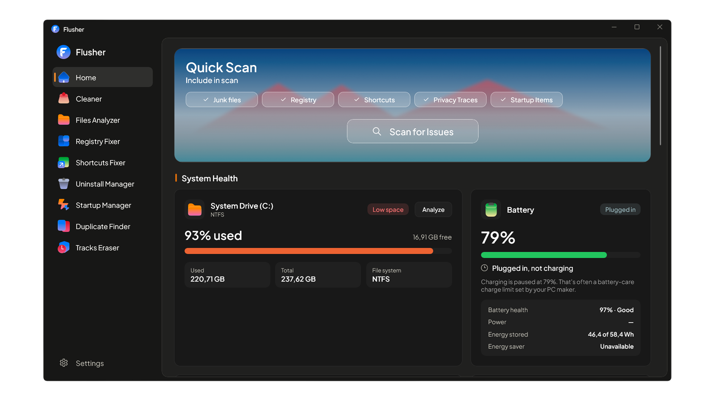

Flusher
A cleaner PC in one scan.
Clear junk, fix the registry and tame startup. Free for Windows.

Every PC fills up with things nobody asked for. Temporary files. Dead shortcuts. Leftovers from apps you removed long ago. Flusher finds all of it, shows you what it found, and clears it in seconds.
Eight tools.
One sidebar.
One scan.
Everything checked.
Quick Scan looks through the places Windows clutter hides. Pick what to include, then press Scan for Issues.
Junk filesRegistryShortcutsPrivacy tracesStartup items
Know before it's full.
Your drive and battery, right on the Home screen.
System Drive (C:)
88%
27,71 GB free of 237,62 GB
Battery · Charging
71%
14 min until full · 97% battery health
You decide what goes.
Nothing is deleted until you review it. Flusher is built on WinUI 3 so it feels like Windows 11, and the code is open under the MIT license.
Give your PC room to breathe.
Free for Windows. No account needed.